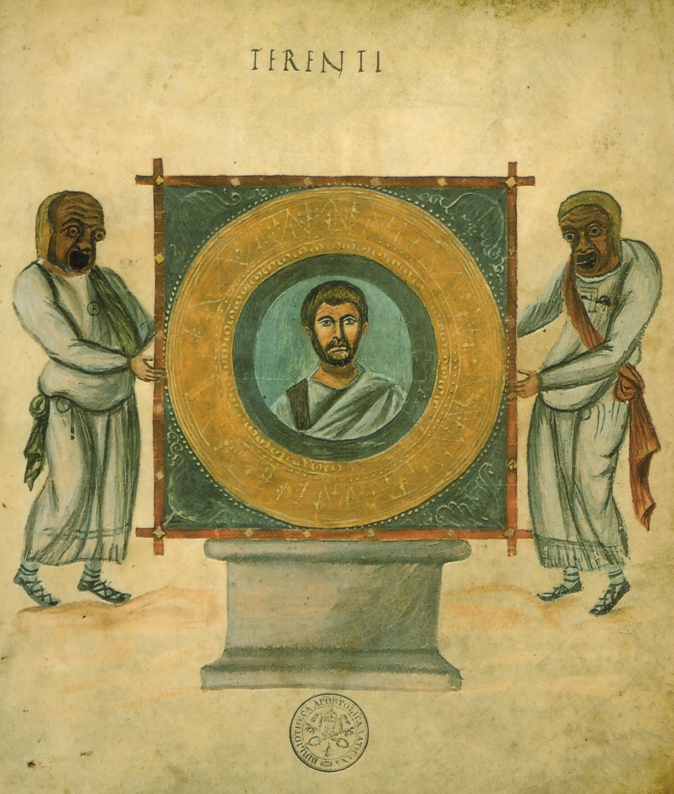
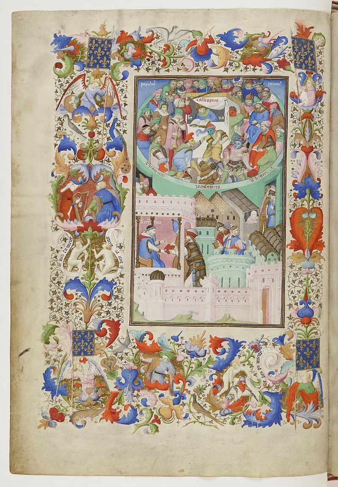
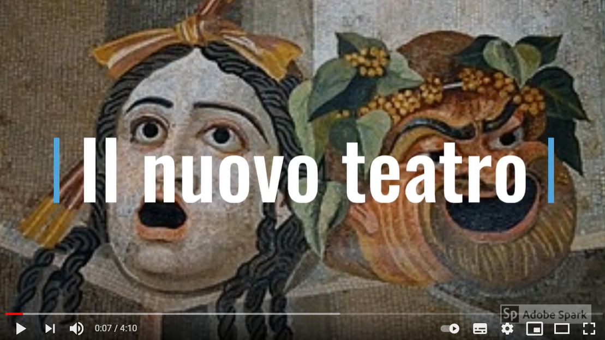

 Ritratto di Terenzio Frontespizio del Codex Vaticanus Latinus 3868 (Biblioteca Vaticana) con il ritratto di Terenzio.  Térence des ducs Frontespizio miniato del codice medievale terenziano detto Térence des ducs, appartenuto al re Carlo VI di Francia, poi a suo figlio Luigi di Valois, duca di Guyenna, e quindi a Giovanni, duca di Berry.  Per una sintesi sul teatro nuovo Il video propone un rapidissimo ripasso del teatro nuovo, con l'indicazione di modelli e tratti pregnanti del teatro nuovo, nonché una rapida carrellata sulla produzione letteraria di Terenzio.